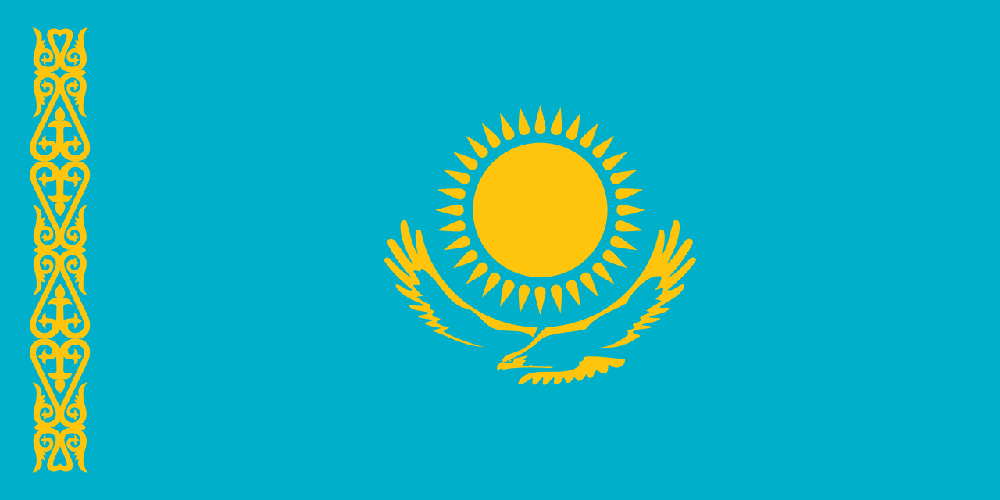

Казахстан
Казахста́н (каз. Қазақстан, Qazaqstan [qɑzɑqˈstɑn], официальное название — Респу́блика Казахста́н (каз. Қазақстан Республикасы; Qazaqstan Respublikasy [qɑzɑqˈstɑn respublikɑ'sɯ], (аббревиатура РК) — государство в центре Евразии, бо́льшая часть которого относится к Азии, меньшая — к Европе. Площадь территории — 2 724 902 км². Население, по оценке государственного комитета по статистике на 1 июня 2021 года, составляет 18 984 845 человек
Плотность населения является одной из самых низких: менее 7 человек на квадратный километр. Столица — Нур-Султан. Крупнейший город с населением свыше 2 млн человек — Алма-Ата. Занимает 9-е место в мире по территории, 2-е место среди стран постсоветского пространства (после России), 42-е — по объёму ВВП по ППС и 64-е — по численности населения
Казахстан официально является демократической, светской, унитарной, конституционной республикой с разнообразным культурным наследием. Местность Казахстана включает равнины, степи, тайгу, скальные каньоны, холмы, дельты, заснеженные горы и пустыни. В экономике доминирует углеводородная промышленность, а занятость населения максимальна в сфере услуг. Ныне правительство прилагает усилия по диверсификации и планирует переключение национальной индустрии на производство товаров с высокой прибавочной стоимостью. Располагается между Каспийским морем, Нижним Поволжьем, Уралом, Сибирью, Китаем и Средней Азией. Граничит на севере и западе с Россией (длина границы — 7548,1 км), на востоке — с Китаем (1782,8 км), на юге — с Киргизией (1241,6 км), Узбекистаном (2351,4 км) и Туркменией (426 км). От восточных границ Казахстана до западных границ Монголии расстояние составляет около 40 км. Общая протяжённость сухопутных границ — 13 392,6 км. Протяжённость страны с востока на запад составляет 2963 км, а с севера на юг — 1652 км. Является самой большой по территории страной Тюркского совета. Омывается водами внутриконтинентальных Каспийского и Аральского морей. Выхода к морю не имеет и является самой крупной в мире страной с такой особенностью.